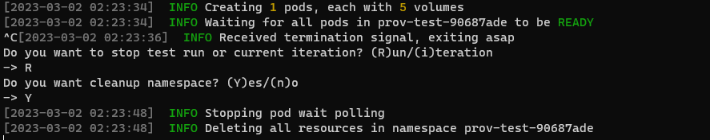
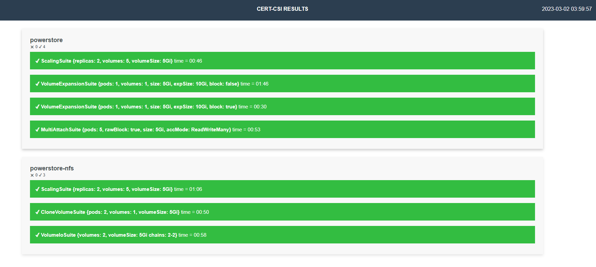

Cert-CSI
Cert-CSI is a tool to validate Dell CSI Drivers. It contains various test suites to validate the drivers.
Installation
To install this tool you can download one of binary files located in RELEASES
You can build the tool by cloning the repository and running this command:
make build
You can also build a docker container image by running this command:
docker build -t cert-csi .
If you want to collect csi-driver resource usage metrics, then please provide the namespace where it can be found and install the metric-server using this command (kubectl is required):
make install-ms
[FOR UNIX] If you want to build and install the tool to your $PATH and enable the auto-completion feature, then run this command:
make install-nix
Alternatively, you can install the metric-server by following the instructions at https://github.com/kubernetes-incubator/metrics-server
Running Cert-CSI
To get information on how to use the program, you can use built-in help. If you’re using a UNIX-like system and enabled auto-completion feature while installing the tool, then you can use shell’s built-in auto-completion to navigate through program’s subcommands and flags interactively by just pressing TAB.
To run cert-csi, you have to point your environment to a kube cluster. This allows you to receive dynamically formatted suggestions from your cluster. For example if you press TAB while passing –storageclass (or –sc) argument, the tool will parse all existing Storage Classes from your cluster and suggest them as an input for you.
To run a docker container your command should look something like this
docker run --rm -it -v ~/.kube/config:/root/.kube/config -v $(pwd):/app/cert-csi cert-csi <usual program arguments>
Driver Certification
You can use cert-csi to launch a certification test run against multiple storage classes to check if the driver adheres to advertised capabilities.
Preparing Config
To run the certification test you need to provide .yaml config with storage classes and their capabilities. You can use example-certify-config.yaml as an example.
Example:
storageClasses:
- name: # storage-class-name (ex. powerstore)
minSize: # minimal size for your sc (ex. 1Gi)
rawBlock: # is Raw Block supported (true or false)
expansion: # is volume expansion supported (true or false)
clone: # is volume cloning supported (true or false)
snapshot: # is volume snapshotting supported (true or false)
RWX: # is ReadWriteMany volume access mode supported for non RawBlock volumes (true or false)
volumeHealth: false # set this to enable the execution of the VolumeHealthMetricsSuite.
# Make sure to enable healthMonitor for the driver's controller and node pods before running this suite. It is recommended to use a smaller interval time for this sidecar and pass the required arguments.
VGS: false # set this to enable the execution of the VolumeGroupSnapSuite.
# Additionally, make sure to provide the necessary required arguments such as volumeSnapshotClass, vgs-volume-label, and any others as needed.
RWOP: false # set this to enable the execution of the MultiAttachSuite with the AccessMode set to ReadWriteOncePod.
ephemeral: # if exists, then run EphemeralVolumeSuite
driver: # driver name for EphemeralVolumeSuite
fstype: # fstype for EphemeralVolumeSuite
volumeAttributes: # volume attrs for EphemeralVolumeSuite.
attr1: # volume attr for EphemeralVolumeSuite
attr2: # volume attr for EphemeralVolumeSuite
Launching Certification Test Run
After preparing a certification configuration file, you can launch certification by running
cert-csi certify --cert-config <path-to-config>
Optional Params:
--vsc: volume snapshot class, required if you specified snapshot capability
--timeout: set the timeout value for certification suites
--no-metrics: disables metrics aggregation (set if you encounter k8s performance issues)
--path: path to folder where reports will be created (if not specified ~/.cert-csi/ will be used)
Functional Tests
Running Individual Suites
Volume/PVC Creation
To run volume or PVC creation test suite, run the command:
cert-csi functional-test volume-creation --sc <storage class> -n 5
Optional Params:
--custom-name : To give custom name for PVC while creating only 1 PVC
--size : To give custom size, possible values for size in Gi/Mi
--access-mode : To set custom access-modes, possible values - ReadWriteOnce,ReadOnlyMany and ReadWriteMany
--block : To create raw block volumes
Provisioning/Pod creation
To run volume provisioning or pod creation test suite, run the command:
cert-csi functional-test provisioning --sc <storage class>
Optional Params:
--volumeNumber : number of volumes to attach to each pod
--podNumber : number of pod to create
--podName : To give custom name for pod while creating only 1 pod
--block : To create raw block volumes and attach it to pods
--vol-access-mode: To set volume access modes
Running Volume Deletion suite
To run volume delete test suite, run the command:
cert-csi functional-test volume-deletion
--pvc-name value : PVC name to delete
--pvc-namespace : PVC namespace where PVC is present
Running Pod Deletion suite
To run pod deletion test suite, run the command:
cert-csi functional-test pod-deletion
--pod-name : Pod name to delete
--pod-namespace : Pod namespace where pod is present
Running Cloned Volume deletion suite
To run cloned volume deletion test suite, run the command:
cert-csi functional-test clone-volume-deletion
--clone-volume-name : Volume name to delete
Multi Attach Volume Tests
To run multi-attach volume test suite, run the command:
cert-csi functional-test multi-attach-vol --sc <storage-class>
--pods : Number of pods to create
--block : To create raw block volume
Ephemeral volumes suite
To run ephemeral volume test suite, run the command:
cert-csi functional-test ephemeral-volume --driver <driver-name> --attr ephemeral-config.properties
--pods : Number of pods to create
--pod-name : To create pods with custom name
--attr : CSI volume attributes file name
--fs-type: FS Type can be specified
Sample ephemeral-config.properties (key/value pair)
arrayId=arr1
protocol=iSCSI
size=5Gi
Storage Capacity Tracking Suite
To run storage capacity tracking test suite, run the command:
cert-csi functional-test capacity-tracking --sc <storage-class> --drns <driver-namespace> --pi <poll-interval>
Optional Params:
--vs : volume size to be created
Other Options
Generating tabular report from DB
To generate tabular report from the database, run the command:
cert-csi -db <db_path> functional-report -tabular
Example: cert-csi -db ./test.db functional-report -tabular
Note: DB is mandatory parameter
Generating XML report from DB
To generate XML report from the database, run the command:
cert-csi -db <db_path> functional-report -xml
Example: cert-csi -db ./test.db functional-report -xml
Note: DB is mandatory parameter
Including Array configuration file
# Array properties sample (array-config.properties)
arrayIPs: 192.168.1.44
name: Unity
user: root
password: test-password
arrayIds: arr-1
Screenshots
Tabular Report example

Kubernetes End-To-End Tests
All Kubernetes end to end tests require that you provide the driver config based on the storage class you want to test and the version of the kubernetes you want to test against. These are the mandatory parameters that you can provide in command like..
--driver-config <path of driver config file> and --version "v1.25.0"
Running kubernetes end-to-end tests
To run kubernetes end-to-end tests, run the command:
cert-csi k8s-e2e --config <kube config> --driver-config <path to driver config> --focus <regx pattern to focus Ex: "External.Storage.*" > --timeout <timeout Ex: "2h"> --version < version of k8s Ex: "v1.25.0"> --skip-tests <skip these steps mentioned in file> --skip <regx pattern to skip tests Ex:"Generic Ephemeral-volume|(block volmode)">
Kubernetes end-to-end reporting
- All the reports generated by kubernetes end-to-end tests will be under
$HOME/reportsdirectory by default if user doesn’t mention the report path. - Kubernetes end to end tests Execution log file will be placed under
$HOME/reports/execution_[storage class name].log - Cert-CSI logs will be present in the execution directory
info.log,error.log
Test config files format
Example Commands
-
cert-csi k8s-e2e --config "/root/.kube/config" --driver-config "/root/e2e_config/config-nfs.yaml" --focus "External.Storage.*" --timeout "2h" --version "v1.25.0" --skip-tests "/root/e2e_config/ignore.yaml" -
./cert-csi k8s-e2e --config "/root/.kube/config" --driver-config "/root/e2e_config/config-iscsi.yaml" --focus "External.Storage.*" --timeout "2h" --version "v1.25.0" --focus-file "capacity.go"
Performance Tests
All performance tests require that you provide a storage class that you want to test. You can provide multiple storage classes in one command. For example, ... --sc <sc1> --sc <sc2> ...
Running Individual Suites
Running Volume Creation test suite
To run volume creation test suite, run the command:
cert-csi test volume-creation --sc <storage class> -n 25
Running Provisioning test suite
To run volume provisioning test suite, run the command:
cert-csi test provisioning --sc <storage class> --podNum 1 --volNum 10
Running Scalability test suite
To run scalability test suite, run the command:
cert-csi test scaling --sc <storage class> --replicas 5
Running VolumeIO test suite
To run volumeIO test suite, run the command:
cert-csi test vio --sc <storage class> --chainNumber 5 --chainLength 20
Running Snap test suite
To run volume snapshot test suite, run the command:
cert-csi test snap --sc <storage class> --vsc <volume snapshot class>
Running Multi-attach volume suite
To run multi-attach volume test suite, run the command:
cert-csi test multi-attach-vol --sc <storage class> --podNum 3
cert-csi test multi-attach-vol --sc <storage class> --podNum 3 --block # to use raw block volumes
Running Replication test suite
To run replication test suite, run the command:
cert-csi test replication --sc <storage class> --pn 1 --vn 5 --vsc <snapshot class>
Running Volume Cloning test suite
To run volume cloning test suite, run the command:
cert-csi test clone-volume --sc <storage class> --pn 1 --vn 5
Running Volume Expansion test suite
To run volume expansion test, run the command:
cert-csi test expansion --sc <storage class> --pn 1 --vn 5 --iSize 8Gi --expSize 16Gi
cert-csi test expansion --sc <storage class> --pn 1 --vn 5 # `iSize` and `expSize` default to 3Gi and 6Gi respectively
cert-csi test expansion --sc <storage class> --pn 1 --vn 5 --block # to create block volumes
Running Blocksnap suite
To run block snapshot test suite, run the command:
cert-csi test blocksnap --sc <storageClass> --vsc <snapshotclass>
Volume Health Metric Suite
To run the volume health metric test suite, run the command:
cert-csi test volumehealthmetrics --sc <storage-class> --driver-ns <driver-namespace> --podNum <number-of-pods> --volNum <number-of-volumes>
Note: Make sure to enable healthMonitor for the driver’s controller and node pods before running this suite. It is recommended to use a smaller interval time for this sidecar.
Ephemeral volumes suite
To run the ephemeral volume test suite, run the command:
cert-csi test ephemeral-volume --driver <driver-name> --attr ephemeral-config.properties
--pods : Number of pods to create
--pod-name : Create pods with custom name
--attr : File name for the CSI volume attributes file (required)
--fs-type: FS Type
Sample ephemeral-config.properties (key/value pair)
arrayId=arr1
protocol=iSCSI
size=5Gi
Running Longevity mode
To run longevity test suite, run the command:
cert-csi test <any of previous tests> --sc <storage class> --longevity <number of iterations>
Interacting with DB
Generating report from runs without running tests
To generate test report from the database, run the command:
cert-csi --db <path/to/.db> report --testrun <test-run-name> --html --txt
Report types:
--html: performance html report
--txt: performance txt report
--xml: junit compatible xml report, contains basic run infomation
--tabular: tidy html report with basic run information
Customizing report folder
To specify test report folder path, use –path option as follows:
cert-csi --db <path/to/.db> report --testrun <test-run-name> --path <path-to-folder>
Options:
--path: path to folder where reports will be created (if not specified ~/.cert-csi/ will be used)
Generating report from multiple databases and test runs
To generate report from multiple databases, run the command:
cert-csi report --tr <db-path>:<test-run-name> --tr ... --tabular --xml
Supported report types:
--xml
--tabular
Listing all known test runs
To list all test runs, run the command:
cert-csi --db <path/to/.db> list test-runs
Other options
Customizing report folder
To specify test report folder path, use –path option as follows:
cert-csi <command> --path <path-to-folder>
Commands:
test <any-subcommand>
certify
report
Running with enabled driver resource usage metrics
To run tests with driver resource usage metrics enabled, run the command:
cert-csi test <test suite> --sc <storage class> <...> --ns <driver namespace>
Running custom hooks from program
To run tests with custom hooks, run the command:
cert-csi test <test suite> --sc <storage class> <...> --sh ./hooks/start.sh --rh ./hooks/ready.sh --fh ./hooks/finish.sh
Screenshots
Running provisioning test

You can interrupt the application by sending an interruption signal (for example pressing Ctrl + C). It will stop polling and try to cleanup resources.

Running scaling test

Listing available test runs

Running longevity mode
Multi DB Tabular report example

Text report example

HTML report example

Resource usage example chart